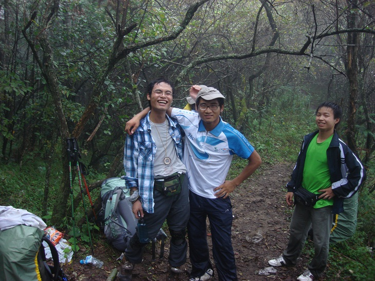
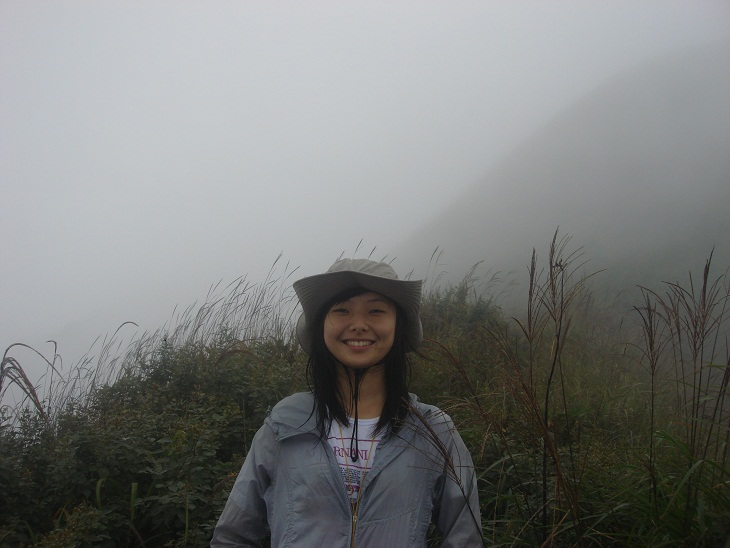
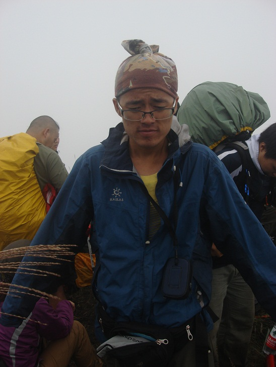
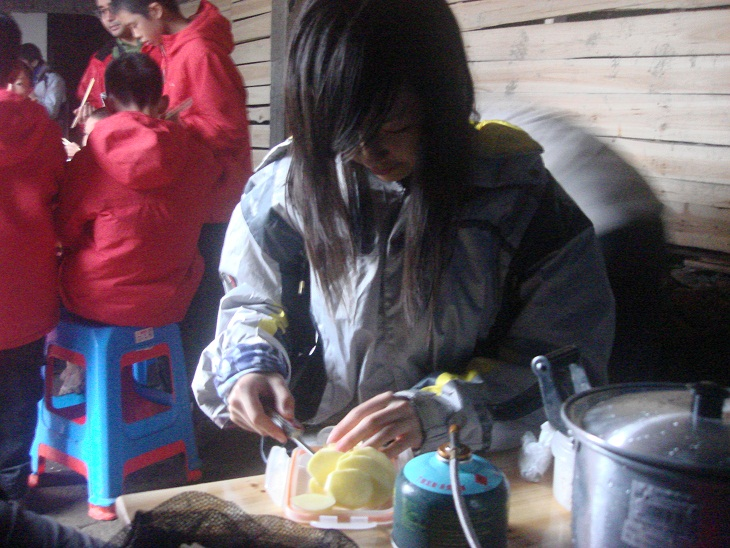
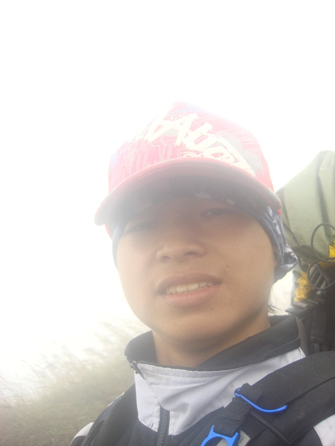
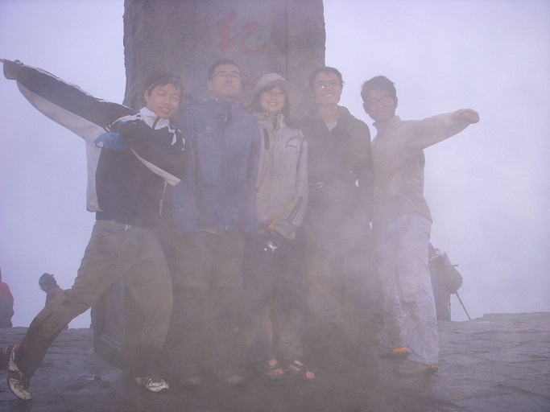

发信人: zzmax (走自己的路), 信区: outdoor
标 题: 武功山游记之古龙版。。
发信站: 饮水思源 (2011年10月07日00:02:07 星期五)
曾经，我们是四个单纯的男生，在交大纯洁的环境里扮演着最最普通的角色，怀揣着最最
纯真的梦想，有一天能够登上武功山的金顶看看那东边的一轮红得令人心动的新日。我们
为此等待着，心急如焚。
有一天，队长大人出现了。
她用神的口气说道：不如，我们就国庆去趟武功山吧。
不容置疑，一呼百应。五个精英聚在了一起，开始筹划他们真正的人生。
出发前，小笔我没有从jr会长那里抢到江湖盛传宝贝garmon的etrex版的gps。听闻
此消息，队伍中最年长的财哥一皱眉头，说：没有gps，那还去个球！
队长其实并么有被财哥吓到。她悄悄地对我说，你随便去搞个gps吧~其实没有gps
咱走起来更刺激不是。
于是，在出发前的第二天晚上，d26 405寝室里的台灯一直亮到了4点。破的不能再
破的gps导航终于被我安上去了。心里舒了一口气睡了个安稳觉。第二天一起来就被告知另
一位牛逼人士敏妹花了500大洋买下一款与协会那个一模一样的gps。我望着他顿时觉得他
好像一把杀猪刀，深深地割进了我的心状（脏）（笑而不语~~）。
准备好一切。我们出发。
火车按预定时间到达了萍乡。我的手指在手机面板上滑动，拨出了那个与我们接头
的司机的号码：“你是？”
“对，我是。”
“你在？”
“对，我在。”
“好。”
一个偏僻的角落，五个人悄悄滴把包送上了小面包驶出了小镇。车屁股冒起黑烟
。
司机很是谨慎，四处张望着什么。突然，在天蒙蒙亮的时候，他停下了车：“在
这里吃碗粉吧。”
粉五块钱一碗。有蛋。五个人瞬间干完，一如既往滴潇洒。喝了口面汤，队长说
：“好辣。上路吧。”
终于，在看到一个老大妈拔鸡毛的地方五个人停了车上了路。因为队长大人被彪
悍的鸡毛所惊吓，故将此地命名为“吓蠢”以作纪念。从下村到岔路口，多是山路，沿途
几处竹竿桥，略滑。小周我因是队伍中年龄最小者，所以被推举成为探蛇者走在最前面。
一根登山杖，两只脚构成了一个稳定的三角平面。我没有摔跤。抬头向西南方望去，虽然
视线被一座座大山挡住，但我知道金顶就在那个方向。我辈必将矢志不渝。
10点半，我们沿着山脊到达了岔路。左手沈家大院，右手发云界。队长命令我们下
包，补充血糖来提高iq。期间，2b刚还在向风口处拉了一泡巨香无比的粪，惹得本想跟我
们一同前行的友人不得不先行一步。唉，在山脊边刮着凉风边吃着叫花鸡，那是冷得多么
惬意的事情啊！队长大骂：有木有看攻略啊！要你带的爪绒捏！~而我，只是在担心2b刚会
不会冷风吹太久冻伤了花儿。不过，事实总是不会按照预定的轨迹发展。健康的2b刚不止
没有冻伤，反倒是跟财哥搅起了基情。有图为证：
 screen.width - 200){this.width = screen.width - 200}">
血糖提高了，我们也就上了路。下午是密林。一路烂泥颇为烦躁。咒骂前面的一百
多号人走路不知道轻点给后人留点好路走走。敏妹倒是身轻如燕，健步如飞，像个猴子似
的在陡峭的岩壁上爬来爬去。队长也尽显她的霸气，一路不知滑了多少跤。不过这倒是不
要紧，因为没有拖我们的后腿大家表示很满意。给力的队长在我们到达草甸的时候笑得像
花儿一样。
。
 screen.width - 200){this.width = screen.width - 200}">
苦逼的我则只有这个表情予以回击。
 screen.width - 200){this.width = screen.width - 200}">
没有办法，我的血糖太低了。
休息期间，队长看我们个个都比较低迷，遂上演了一出如何教你错误上包记聊以逗
大家开心：
到了法云寺，我们第一天的行程算是结束了。冷得一逼的我还不忘给队长拍个贤惠
切土豆的照片。队长你要记得那一顿bg啊啊啊！！
 screen.width - 200){this.width = screen.width - 200}">
唉，土豆都被您切亮了。
晚饭本来是自带二斤余两熟米饭配浓汤宝。结果不知这宝贝何时何故忘记带上山，
于是乎只得点一锅山里土鸡汤来下饭。唉，罪过罪过。心疼那130块大洋又这样打水漂了。
不过一路上的动力都是来源于此啊。鸡是我的眼，带我走过千山万水总是情深深雨朦朦。
五个人干完一只鸡，两斤饭，两坨肉，四个土豆，五根黄瓜之后，陷入了一片沉默。
怎么睡帐篷？这，是个问题。五个人饶有兴致滴坐在一起，话却无。
我盯着我的kailas春晖加强版，咬一咬牙，说：要不，我们三个老男人睡个T3吧。
结果，队长大人就跟财哥进了我那崭新的小窝。唉，我那可爱帐篷的处女夜啊~
于是，我与另外两男纸挤进了黄色的帐篷。第一天的路线还是比较虐的，大家早早
滴就睡了。
一宿无声。
第二天，我们按照“预计”时间8点45出发。呃，整个法云寺估计就只剩下我们了。
于是，第二天我们苦逼的从法云寺走到白云客栈的时候已经是1点半了。嗯，希望能
看到队长大人对于这一事件作出合理的解释。当我们一路在草甸上狂奔的时候，敏妹讲了
个笑话：
“您好，您拨打的用户正在裸奔。。。”
“您好，您拨打的用户还在裸奔。。。”
“您好，您拨打的用户已奔出服务区。。。”
我们就这样一路秒杀一切队伍。
难道我们是无敌的？我心里暗自窃喜。
可是，命运总是爱开玩笑。风来了。
我们一路走山脊，风一路吹。千里风吹，万里雨飘。老天爷暗器乱发，打在脸上，
疼；老天爷肠胃不好，使劲放屁，劲还挺足，直吹得我们往路边跑。阿拉伯少妇敏妹则被
吹成了如此一番模样：
 screen.width - 200){this.width = screen.width - 200}">
在绝望坡下，我们并没有害怕。虽然路滑无比，虽然陡峭不可见其顶，但是我还是
微笑着。因为，还有下坡的那些人更是苦逼。一个小时，到了金顶之下的台阶。
有一卖凉粉摊。
2b刚前去：“老板，五碗凉粉。”
“不卖。”老板似乎有些不悦。
“那，我就走吧。”
“等等。”老板招架不住了。“3碗吧。晚上儿子回来还要吃。”说完，他向金顶
望去。
正当老板往碗里舀时。只见财哥上前大喝道“慢！打包。带上山吃更爽。”
也罢也罢。
众人休息够了便上了山。
山上有一庙，可扎营。一老爹看我们一行人面善便将我们拉进了他的小黑屋，说
：“就扎这里罢。只收你们10块钱。”
这等天赐好事，我神勇威武的队长当即表示同意。扎营开饭。晚饭是面，配有琥
珀蛋四只，黄瓜五根，其余垃圾食品不表。
饭毕，大爷与我们聊起了天。从他儿子从小喜欢爬武功山一天可以上下两趟聊到
他现在在四川工作一个月可以赚一万多。大爷很是骄傲。我们也跟着感到幸福。
吃饱聊够，五人便进了帐篷睡了觉。
这一晚，我与队长搅了一夜的基。。。。
早上朦胧之中只听敏妹一声大叫：“起来啦！外面居然没有下雨！有日出！"
队长听闻迅速穿好衣服跑了出去。我觉着不对劲，怎么可能没有雨呢？可是，一个
人的帐篷总是冰冷的。我还是出来了。刚一出门，只见天边泛起一线红。我很高兴，觉着
圆了此行的目的和财哥的日出情节。
哼歌一路小跑上了金顶。与众英雄相聚与此。再往天边一看，居然已经是灰蒙蒙的
一片。说好的日出泡了汤。结果只剩几人如此一般囧相：
 screen.width - 200){this.width = screen.width - 200}">
第三天的行程相对来说就比较简单了。不过岔路较多。一路上探路几次。不过无妨
，走在草甸上的感觉就是爽。五人最后顺利下山。期间众人纷纷上演撞头记，摔桥记等等
不表。
善哉。
ps:一切来源于生活而高于生活，勿对号入座~
--
super man！！！
※ 来源:·饮水思源 bbs.sjtu.edu.cn·[FROM: 59.78.44.30]
|